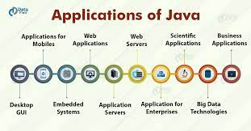

Java is a programming language and a platform. Java is a high level, robust, object-oriented and secure programming language.
Java was developed by Sun Microsystems (which is now the subsidiary of Oracle) in the year 1995. James Gosling is known as the father of Java. Before Java, its name was Oak. Since Oak was already a registered company, so James Gosling and his team changed the name from Oak to Java.
Platform: Any hardware or software environment in which a program runs, is known as a platform. Since Java has a runtime environment (JRE) and API, it is called a platform.
According to Sun, 3 billion devices run Java. There are many devices where Java is currently used. Some of them are as follows:
There are mainly 4 types of applications that can be created using Java programming:
Standalone applications are also known as desktop applications or window-based applications. These are traditional software that we need to install on every machine. Examples of standalone application are Media player, antivirus, etc. AWT and Swing are used in Java for creating standalone applications.
An application that runs on the server side and creates a dynamic page is called a web application. Currently, Servlet, JSP, Struts, Spring, Hibernate, JSF, etc. technologies are used for creating web applications in Java.
An application that is distributed in nature, such as banking applications, etc. is called an enterprise application. It has advantages like high-level security, load balancing, and clustering. In Java, EJB is used for creating enterprise applications.
An application which is created for mobile devices is called a mobile application. Currently, Android and Java ME are used for creating mobile applications.

There are 4 platforms or editions of Java:
It is a Java programming platform. It includes Java programming APIs such as java.lang, java.io, java.net, java.util, java.sql, java.math etc. It includes core topics like OOPs, String, Regex, Exception, Inner classes, Multithreading, I/O Stream, Networking, AWT, Swing, Reflection, Collection, etc.
It is an enterprise platform that is mainly used to develop web and enterprise applications. It is built on top of the Java SE platform. It includes topics like Servlet, JSP, Web Services, EJB, JPA, etc.
It is a micro platform that is dedicated to mobile applications.
It is used to develop rich internet applications. It uses a lightweight user interface API.